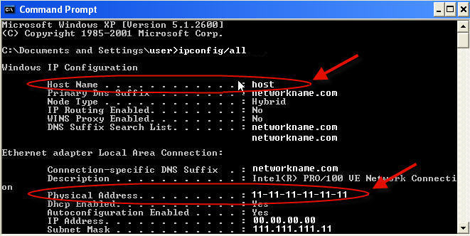
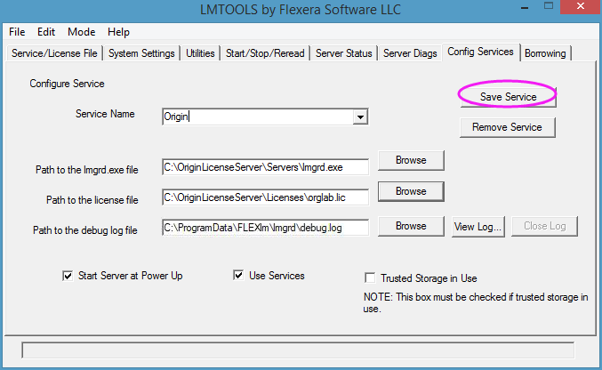

Einrichtung des FLEXnet-Servers für Windows
Concurrent-Windows
Diese Seite ist hauptsächlich für Anwender, für die der FLEXnet-Server neu ist und ihn zum ersten Mal einrichten. Am einfachsten lernen Sie, wie diese Einrichtung durchgeführt wird, indem Sie sich folgendes Video ansehen: /Video_Image_2016.png) Ihr Concurrent-Netzwerklizenzpaket einrichten .
Ihr Concurrent-Netzwerklizenzpaket einrichten .
Einen Computer für Ihren FLEXnet-Server auswählen
Anforderungen
- Stabiler Rechner, der keine häufigen Neustarts erfordert Dies kann entweder ein Server oder eine Compouter (Workstation) sein.
- Das Betriebssystem unterstützt Windows Server 2022, 2019, 2016, 2012, 2008, Windows 11, 10, 8/8.1, 7 and Vista (32 Bit & 64 Bit).
- Das Microsoft Visual C++ 2012 Redistributable Package muss installiert sein.
- Geringer Netzwerkverkehr
- Empfohlen wird ein RAM von mindestens 64 MB.
- Alle potenziellen Origin-Computer können mit ihm verbunden werden. Die Kommunikation zwischen dem FLEXnet-Lizenzserver und den Mitgliedern des Origin-Concurrent-Netzwerks findet über TCP/IP-Netzwerkprotokolle statt.
FLEXnet-Server installieren
/Alert_icon.png) |
- Wir empfehlen immer das Aktualisieren Ihrer FLEXnet-Server auf die aktuelle Version, um jegliche Lizenzierungsprobleme oder Sicherheitsrisiken zu vermeiden. Die aktuelle Version ist 11.16.5.1.
- Microsoft Visual C++ 2012 Redistributable Package muss installiert sein. Falls es das noch nicht ist, laden Sie es herunter und installieren Sie es zuerst.
|
Auf einer neuen Maschine
Wenn Sie einen FlexNet-Server auf einer neuen Maschine einrichten, laden Sie einfach die Datei FLEXlmServerSetup.exe herunter und installieren Sie sie. Falls Sie eine Origin-DVD haben, können Sie sie alternativ auch von dort installieren. Installieren Sie sie bitte NICHT in das Verzeichnis C:\Programme\ oder auf Ihrem Desktop.
-
Bestehenden FlexLM-Lizenzserver aktualisieren
Um ein Upgrade Ihres FLEXnet-Servers auf die aktuelle Version (11.16.5.1) vorzunehmen, empfehlen wir die Deinstallation Ihrer alten Installation des FLEXnet-Servers und dann die Installation der neuen Version. Er sollte sich nicht im Programmdateiordner oder auf dem Desktop befinden.
|
Der FLEXnet-Server 11.16.5.1 erfordert das Microsoft Visual C++ 2012 Redistributable Package. Bitte laden Sie es herunter und installieren Sie es zuerst.
|
Alten FLEXnet-Server von OriginLab entfernen:
- Navigieren Sie zum Ordner Ihres alten FLEXnet-Servers, suchen Sie nach der Lizenzdatei und erstellen Sie ein Backup, da Sie es beim Starten des neuen Servers brauchen werden.
- Führen Sie LMTOOLS.exe aus und gehen Sie zur Registerkarte 'Start/Stop/Reread'. Aktivieren Sie das Kontrollkästchen 'Force Server Shutdown' und klicken Sie auf 'Stop Server'.
- Warten Sie einen Moment auf den Server, damit er herunterfahren kann. Sie können den Serverstatus prüfen, um zu sehen, ob er heruntergefahren ist.
- Wechseln Sie als Nächstes zur Registerkarte 'Config Services', wählen Sie den Namen Ihres OriginLab-Lizenzdienstes und klicken Sie auf 'Remove Service'. Sie können LMTOOLS.exe jetzt schließen.
- Deinstallieren Sie jetzt den FLEXlm-Server von Originlab, indem Sie die Windows-Systemsteuerung öffnen, das Programm mit dem Namen 'License Server for OriginLab' suchen und es ausführen. Es deinstalliert die alten FLEXnet-Serverdateien von OriginLab.
- Räumen Sie den alten Ordner auf, falls er noch existiert. Er kann z. B. möglicherweise noch Ihre Lizenzdatei oder Protokolldateien enthalten.
Hinweise:
Eine Lizenzdatei für den Computer des FLEXnet-Servers von Originlab.com erhalten
Hostname und Host-ID des FLEXnet-Servers suchen
- Falls Sie einen FLEXNet-Server installiert haben, gehen Sie zum Installationsort. Führen Sie im Ordner Tools die Datei LMTools.exe aus.
- Notieren Sie sich den Computer/Hostnamen und die Ethernet-Adresse auf der Registerkarte Systemeinstellungen.
/FLEXnet_Sys_Settings.png)
- Öffnen Sie die Befehlseingabe und geben Sie folgenden Befehl ein:
ipconfig /all
Im Befehlseingabefenster werden diese zwei Merkmale als Hostname und Physikalische Adresse gemeldet.
- 
Lizenzdatei abrufen
- Gehen Sie zu https://originlab.com und melden Sie sich an.
- Wählen Sie den Link Meine Lizenz(en) verwalten auf der Seite, die nach der Anmeldung angezeigt wird.
- Wenn Sie bereits eine Origin-Seriennummer in Ihrem Online-Konto angemeldet haben, wird Ihnen die Seite der Origin-Produktregistrierung angezeigt.
- Wenn Sie zum ersten Mal eine Lizenz für diese Seriennummer und Version registrieren und abrufen, klicken Sie auf die Schaltfläche Registrierung oder Generierung einer Lizenzdatei.
- Wenn Sie zuvor eine Lizenz für diese Seriennummer und Version registriert und abgerufen haben (entsprechend dem Vorgang, wenn Sie Ihren FLEXnet-Dienst auf eine andere Maschine verschieben und das Antragsformular der Systemübertragung ausgefüllt haben), aktivieren Sie das Kontrollkästchen neben Ihrer Seriennummer und Version und klicken Sie auf die Schaltfläche FLEXnet-Lizenz anfordern unter der Tabelle.
- Wählen Sie "Ich möchte meine Origin-Software registrieren und eine Lizenzdatei für einen Computer anfordern" und klicken Sie auf Weiter.
- Geben Sie Ihre Origin-Seriennummer, Version etc. ein und klicken Sie auf Fortfahren.
- Geben Sie dann den Hostnamen des FLEXnet-Servers (Befehlseingabe Computer/Hostname) und die Host ID ein (hierbei handelt es sich um die Ethernet-Adresse, die LMTOOLS zu entnehmen ist oder die Physikalische Adresse, die in der Befehlseingabe angezeigt wird, OHNE DIE BINDESTRICHE ("-")).
- Klicken Sie auf die Schaltfläche Senden, um die Lizenzdatei zu erzeugen.
- Bei Erfolg wird Ihnen der Lizenzdateitext auf der Webseite angezeigt. Kopieren Sie den Lizenzdateitext von der Webseite und fügen Sie ihn in einen Texteditor wie Notepad ein.
- Wählen Sie im Texteditor die Option Datei | Speichern unter. Setzen Sie Alle Dateien (*.*) unter Dateityp. Speichern Sie sie als orglab.lic im Ordner \Licenses\ des FLEXnet-Servers. Dies ist der empfohlene Speicherort. Sie können sie aber auch an einer anderen Stelle speichern. Gehen Sie zum Ordner Licenses\, um sicherzustellen, dass die Datei orglab.lic ist statt orglab.lic.txt.
FLEXnet-Dienst einrichten und starten
- Führen Sie LMTOOLS.exe aus dem Ordner \Tools\ des FLEXnet-Servers aus. Wenn Sie Windows Server 2012, 2008, Windows Vista, 7 oder 8 haben, klicken Sie mit der rechten Maustaste auf LMTools.exe und wählen Sie "Als Administrator ausführen" aus, um die Datei zu öffnen.
- Wählen Sie auf der Registerkarte Service/License File die Option Configuration Using Services.
- Geben Sie auf der Registerkarte Config Services entweder OriginLab oder einen Namen Ihrer Wahl im Textfeld Service Name ein.
- Klicken Sie im Feld Path to the lmgrd.exe file auf die Schaltfläche Durchsuchen und navigieren Sie zum Ordner \Servers\ des FLEXnet-Servers, wählen Sie die Datei lmgrd.exe aus.
- Klicken Sie im Feld Path to the license file auf die Schaltfläche Durchsuchen und navigieren Sie zum Ordner \Licenses\ des FLEXnet-Servers, wählen Sie die Datei orglab.lic und klicken Sie dann auf die Schaltfläche Öffnen.
- Die Debug-Protokolldatei existiert noch nicht - der Dienst erstellt sie basierend auf der Eingabe in dieses Textfeld. Ein Pfad unter \ProgramData\FLEXlm\lmgrd\ ist im Textfeld bereits eingegeben. Wir empfehlen, diesen Pfad zu übernehmen, um jegliche Probleme mit Zugangsrechten zu vermeiden.
- Aktivieren Sie das Kontrollkästchen Use Services.
- Wenn Sie möchten, dass der Dienst automatisch gestartet wird, wenn der Server hochfährt, aktivieren Sie Start Server at Power Up.
- Klicken Sie auf Save Service.

- Aktivieren Sie auf der Registerkarte 'Start/Stop/Reread' das Kontrollkästchen Force Server Shutdown.
- Klicken Sie auf die Schaltfläche Start Server. Sie sollten die Meldung "Server Start Successful" in der Statusleiste LMTOOLS angezeigt bekommen.
/Start_stop_reread.png)
- Klicken Sie auf der Registerkarte 'Server Status' auf die Schaltfläche 'Perform Status Enquiry'. Das Statusfenster meldet relevante Informationen zur Funktionsnutzung.
/Server_status.png)
- Sie können für diesen FLEXnet-Lizenzserver Ports in Ihrer Firewall öffnen, damit er mit Ihrer Origin-Software kommunizieren kann. Ausführliche Anweisungen finden Sie hier.
Siehe auch:
- Zugriff des FLEXnet-Dienstes von Origin durch eine Firewall zwischen Ihrem Server und Ihren Client-Installationen zulassen
- Wenn Sie den Zugriff auf den FLEXnet-Dienst einschränken oder Lizenzen für bestimmte Anwender, Abteilungen etc. reservieren möchten, können Sie eine Optionsdatei erstellen.
- FLEXnet-Server für Linux einrichten